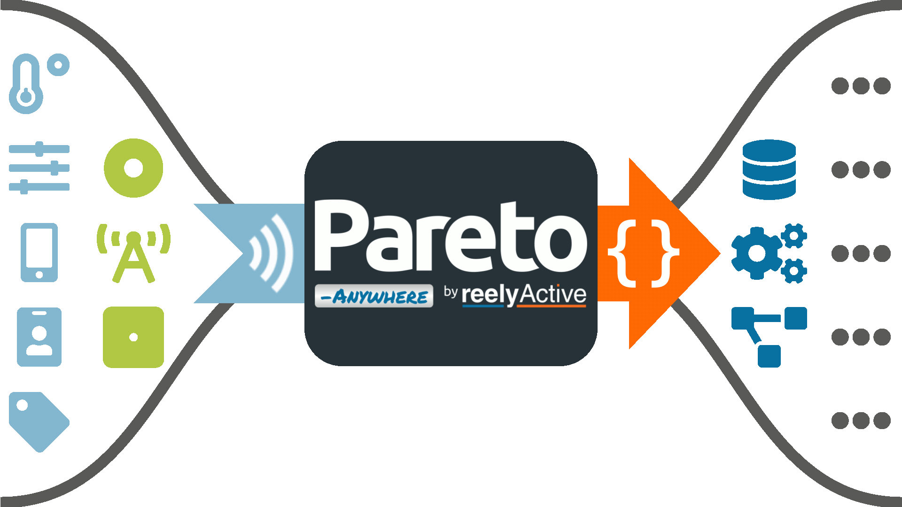
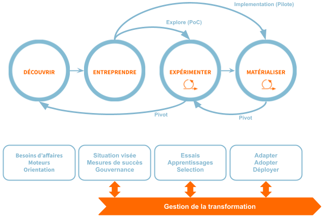

Identifier, détecter et localiser ce qui compte dans vos espaces physiques.
reelyActive, entreprise technologique montréalaise fondée en 2012, innove depuis ses débuts pour rendre l'Internet des Objets (IoT) et les systèmes de localisation en temps réel (RTLS) accessibles à tous:
- Développe et maintient l'intergiciel open source Pareto Anywhere
- Accompagne les organisations dans le design de solutions IoT ouvertes, interopérables et évolutives—sans dépendance technologique
- Guide les choix technologiques par des recommandations impartiales
- Met à profit une expertise reconnue en performance opérationnelle
- Offre un modèle de souscription donnant accès continu à l'expertise technique et opérationnelle
- Apporte une expertise de bout en bout pour surmonter les défis techniques et organisationnels liés à l'exploitation de vos données
Les défis de l'IoT
« L'IoT a besoin d'une technologie de fondation pour devenir réellement universel et exploitable »
Enjeux
Les organisations ont besoin de données fiables sur leurs opérations physiques, mais se heurtent à des obstacles récurrents:
- Multiplicité des capteurs, protocoles et fournisseurs
- Solutions propriétaires qui enferment dans un écosystème fermé
- Données fragmentées, non standardisées, difficiles à exploiter
- Manque d'expertise pour assembler une architecture cohérente
Besoin
Une technologie qui sert de fondation à un IoT ouvert et cohérent:
- Standardiser les données pour les rendre immédiatement exploitables
- Éliminer les silos imposés par les solutions propriétaires
- Réduire la complexité et les coûts des déploiements
- Fournir un socle stable pour tous les cas d'usage
Un accompagnement structurant
- Simplifier la mise en œuvre et d'accélérer la montée en compétence des équipes
- Assurer une intégration fluide et cohérente dans les systèmes existants
Pareto Anywhere
« La technologie qui sert de fondation à un IoT ouvert, interopérable et sans silos »
Pareto Anywhere, intergiciel IoT open source, fournit un flux de données, unifiées et standardisées sur qui/quoi se trouve où et comment, immédiatement exploitable, sur lequel vos équipes peuvent construire leurs applications pour plusieurs cas d'usage, en évitant les silos et sans dépendance à un fournisseur unique.
- Traduit les données radio issues de capteurs et balises en un format unique, immédiatement exploitable par les systèmes d'information des entreprises
- Unifie et normalise les données provenant de divers dispositifs dans un flux unique, prêt à l'emploi, sur lequel vos équipes peuvent construire leurs applications
- Fournit la fondation ouverte et interopérable qui unifie les flux IoT et permet leur réutilisation pour tous les cas d'usage (socle commun - élimine les silos)
- Supporte plusieurs protocoles et fournisseurs, indépendant du matériel et des applications
- Se déploie en périphérie (edge) ou dans le cloud

Approche DEEM
« Une transformation qui évolue avec le contexte »

Extension de votre organisation, pleinement intégrée à votre équipe d'innovation.
- Sélection des technologies IoT
- Conception de solutions ouvertes et pérennes
- Intégration du flux de données vers vos applications
- Éducation et transfert de connaissances
Pourquoi reelyActive
« Liberté technologique, valeur mesurable »
Valeur économique tangible
-
Ouvert et sans dépendance
Liberté d'évolution et autonomie technologique
-
Données unifiées, standardisées et interopérables
Intégration simplifiée, complexité réduite et réutilisation facilitée
-
Approche agile
Ajustements rapides, décisions guidées par l'apprentissage et l'intention stratégique
-
Flexible par souscription
Adaptation continue, sans cycles contractuels, passage rapide à la valeur
-
Solution éprouvée (adoptée mondialement)
Réduction du risque et innovation accélérée
Pour les développeurs
- Accès complet au code open source
- Documentation claire et structurée
- Exemples, tutoriels et démos pratiques
- Communauté active et collaborative
- Autonomie pour intégrer, étendre et déployer
- Support accessible et réactif
- Équipe disponible pour vous aider
Adéquation contextuelle
« Miser sur les contextes où notre approche crée le plus de valeur »
Contexte favorable
- Environnements cherchant des solutions interopérables, ouvertes et évolutives, soutenues par une vision numérique claire
- Équipes visant autonomie et maîtrise de l'architecture
- Organisations avançant par itération, apprentissage et adaptation
Contexte moins aligné
- Environnements privilégiant des solutions clés en main fermées ou propriétaires pour un cas d'usage spécifique et unique
- Organisations fonctionnant par cadrage exhaustif avant exécution
- Modèles basés sur cycles contractuels et livrables figés